Background Theory
Autism Spectrum Disorders (ASD)
Autism Spectrum Disorder is used as an umbrella term to enclose different types of disabilities. Suffering from ASD can lead to many types of difficulties, which can vary vastly between patients, such as communication, social, language and motor disorders. Different types of Autism Spectrum Disorders include:
-
Asperger Syndrome = children affected can have an high intelligence quotient (IQ) , but suffer of social interaction problems.
-
Autistic Disorder = children affected demonstrate unusual behaviours, language delays and communication difficulties.
-
Pervasive developmental disorder, not otherwise specified (PDD-NOS) = children who display some ASD symptoms but do not meet all the Asperger Syndrome or Autistic Disorders criteria.
Genes can play an important role in determining if a child is affected or not by autism, but there is still a lot that can be done to prevent it. Mothers who suffer a low iron intake, have an unhealthy lifestyle or are exposed to a high level of air pollution are in fact more likely to give birth to autistic children.
Early signs to understand if a child is affected or not by autism can be lack of: happy expressions, response to stimulus, gesturing for communicating and attempts to speak [3] (Figure 2.1).
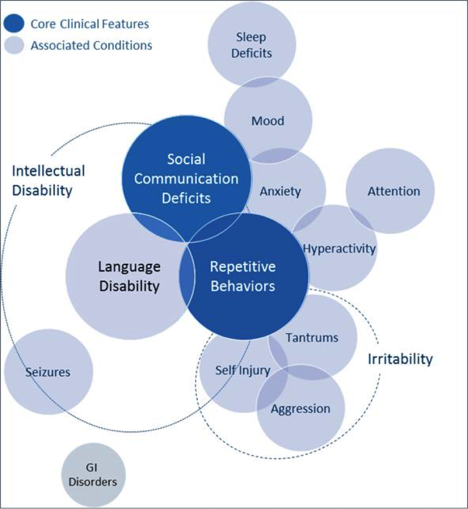Figure 2.1: Autism Symptoms. Image reproduced from: [4]
Many behavioural therapies have been designed during the last few decades in order to aid children affected by autism such as: Floortime, Pivotal Response Treatment (PRT), Verbal Behavior Therapy, ABA and ESDM. During Floortime, parents and therapists take part in games the child likes to play, encouraging the child to take initiatives on how to develop the game and share this activity with other people. In PRT the therapist aims instead to stimulate specific vital developmental areas such as self-management and response to cues. Verbal Behavior Therapy was designed to help a child improve its language and communicative abilities. This is done by making children aware of the importance and benefits of using words as a way to express their needs and desires.
Nowadays, there does not exist a recognised medical test for autism diagnostic. Cases are examined individually by doctors for classification. Online screening tools such as Q-Chat are currently available to help parents understand if their child is affected or not by autism [5]. Uses of Machine Learning (to analyse patients EEG readings) and Computer Vision (to detect, from video recording, behavioural and communication impairments) might provide a useful solution to this problem.
Applied Behavior Analysis (ABA)
Applied Behavior Analysis is a therapy approach based on finding out how learning takes place and how behaviour can be affected by the surrounding environment. It's main objective is to encourage behaviours that are positive for the patient and discourage behaviours that can negatively affect learning or have detrimental effects on the patient. One of the main parts ABA is interested in, is to understand what happens before and after the occurrence of a behaviour. ABA therapy can lead to an increase in social, communication skills and attention. This type of intervention approach can be used not only to help children (and potentially also adults) with autism but also other types of physical behaviour disorders such as eating disorders. ABA efficacy has been successfully proven thanks to many years of studies accomplished by acclaimed institutions and researchers [6].
Early Start Denver Model (ESDM)
The Early Start Denver Model is a teaching play based behaviour therapy used to help children with disabilities. This approach is based on ABA, and is aimed at children between 1 to 4 years old. The main objective of ESDM is to help children improve their communication, language and social skills. This is achieved through games and joint activities. ESDM is typically used in both a domestic and clinical setting (additionally also in schools). In this way, both therapist and parents get personally involved in the therapy.
Conducting part of the therapy at home (between children and parents) can also lead to substantial economical savings because it consistently reduces the number of weekly hospital hours of treatment needed (traditionally about 25 hours per week). Additionally, thanks to ESDM, children can also achieve better results because they might feel more comfortable to play at home with their parents rather than with a doctor in a hospital [7]. ESDM approach relies on one to one sessions between therapist and child and personalised intervention tailored according to the needs and improvements of the child.
Studies have shown that ESDM can lead to more substantial improvements in children's IQ and adaptive behaviour compared to typical community-intervention approaches [8].
Electroencephalogram (EEG)
EEG uses electrodes (small metal disks) placed on the scalp of the patient to track brainwave patterns and send the results to a computer for later analysis. Brain waves are observed measuring the electrical activity in the brain (electrical pulses of neurons communicating each other). EEG is generally used to identify occurrences such as changes of behaviour and seizures. Brainwaves can be divided in different bands according to their travelling speed (Hertz) [9]:
-
Infra-Low: less than 0.5 Hz = basic cortical rythm
-
Delta Waves: 0.5 to 3 Hz = dreamless sleep
-
Theta Waves: 3 to 8 Hz = sleep and meditation
-
Alpha Waves: 8 to 12 Hz = brain resting, flow of thoughts
-
Beta Waves: 12 to 38 Hz = standard consciousness waking state
-
Gamma Waves: 38 to 42 Hz = love, altruism etc...
Another form of EEG analysis is quantitative EEG (qEEG). QEEG aims to analyse brainwaves using statistic and mathematics. Thanks to a process of quantitative comparison and accurate measurements, qEEG is able to recreate a map of the brain. A qEEG application example can be a research carried out by Lineu C. Fonseca about "Quantitative EEG in children with learning disabilities" [10], which has shown that children who suffer with reading and/or writing disabilities had higher delta activity in frontal-temporal regions than average.
Serious Games and Gamification
One of the aims of this project was to design a suite of games to help children with disabilities. Games created for a purpose other than entertainment are notoriously known as Serious Games. While playing a Serious Game, players will be likely asked to solve problems. Instead, traditional games mainly focus on action. In order to make learning effective, the main component required is engagement with the subject. Different mediums for learning are nowadays used such as: reading books, articles, manuals and educational videos. Each of these mediums have their advantages and disadvantages; the strength of delivering educational content through a game-based environment is the increase of student's engagement. What contributes to that are factors such as: the presence of a story-line, challenge and competition against themselves and others to improve their game scores, taking risky decision and paying the consequences for their actions, and learning to follow and understand rules. These concepts have applications in both games and in the real world, users makes mistakes and learn from them to make improvements.
Serious Games can have a wide ambit of application as: health-care, defence, scientific and educational purpose's. Multinational companies have made use of Serious Games during the last few years. Examples include: "Microsoft Flight Simulator", "IBM city one" and "Amnesty the Game" [11]. Another application of game mechanics in non-gaming contexts is Gamification.
In ordinary use, the terms Serious Games and Gamification get confused with each-other. Gamification aims to examine what engages most its potential players and then builds a game based on the gathered data. Designing games suited for each individual according to their needs and abilities can lead to positive behavioural improvements and increase player motivation. In contrast, Serious Games take business concepts and attempts to apply them using gaming techniques. Serious Games are not generally used as an exclusive learning technique but to reinforce understanding [12].
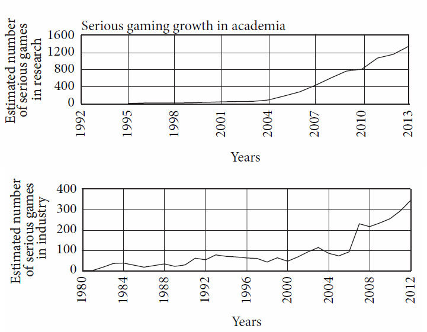Figure 2.2: Serious gaming applications growth in academia and industry - Image reproduced from [13] - "An overview of Serious Games" - Fedwa Laamarti et al.
Artificial Intelligence (AI)
The birth of AI goes back to the end of the Second World War, starting with Alan Turing. At that point in time, German forces were using the Enigma Machine to encrypt their messages. Turing, using the Bombe machine, successfully managed to crack the 'Enigma' code. These two machines (Enigma and Bombe) constituted the foundations of Machine Learning. In fact, according to the Turing Test, a machine could be considered as intelligent if it is able to converse with humans without letting them find out it's true nature (therefore winning the "imitation game") [14].
Today, Artificial Intelligence has undergone impressive advancements. AI can be subdivided into three different levels according to the ability of machines to perform intellectual tasks logically and independently:
-
Narrow AI = machines are more efficient than humans in performing very specific tasks (but not trying to perform other types of tasks).
-
General AI = machines are as intelligent as human beings.
-
Strong AI = machines perform better than humans in different ambit (in tasks that we might or not be able to perform at all).
Right now we are only at a Narrow AI level. Artificial Intelligence can be broken down in many different categories such as: Machine Learning, Natural Language Processing (NLP), Vision, Robotics and Autonomous Vehicles [15] (Figure 2.3).
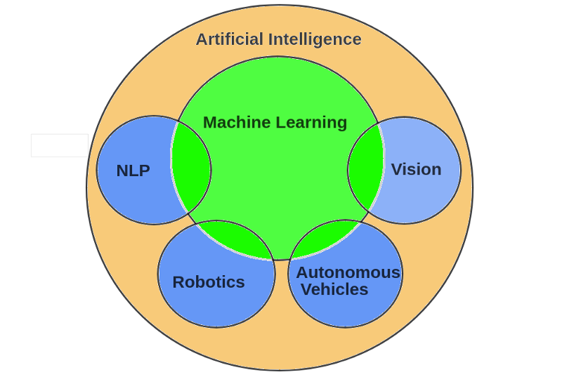Figure 2.3: Different AI fields. Image reproduced from: [15]
One of the most frequently used AI tools is Machine Learning. There are three main types of machine learning algorithms used:
-
Supervised Learning = using a labelled training set to train a model, to then make predictions on unlabelled data.
-
Unsupervised Learning = giving a model an unlabelled data-set, the model has then to try to find patterns in the data to make predictions.
-
Reinforcement Learning = training a model trough a reward mechanism to encourage positive behaviours in case of good performance (particularly used in robotics applications).
The most important sub-field of Machine Learning is Deep Learning (DL). DL is mainly inspired by the structure and function of the human brain and therefore makes use of artificial neural networks. One of the first attempts in this field was the perceptron (which had very limited performance). Successive development of deep neural networks, adding multiple hidden units, using non linear activation functions and back-propagation algorithms lead to far greater results.
![AI, ML and DL relation. Image reproduced from:
[@DL]](../images/DL.png)
Figure 2.4: AI, ML and DL relation. Image reproduced from: [16]
Long Short-Term Memory (LSTM)
LSTM is a type of Recurrent Neural Network (RNN). RNN were initially developed to make up for the inability of traditional neural networks to work with time series. This is because traditional neural networks, in contrast with RNN, lack of a memory mechanism to remember its past input values (all the inputs are fed in at once and information moves only in one direction; forward). RNN are able to overcome these shortfalls keeping information in a loop, therefore enabling the network to make decisions using not only the current input but also the previous ones (input are added sequentially, one input is added after the previous one has been computed). Therefore, to some extent, a RNN can be considered as a collection of artificial neural networks passing each output from the previous one.
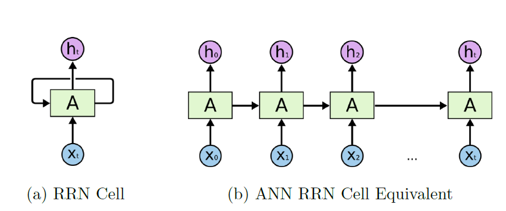Figure 2.5: Artificial Neural Network equivalent of RNN Cell. Image reproduced from [17]
RNN are although still far from being perfect. They are in fact just able to retain short term information and might suffer from vanishing/exploding gradients when performing the backwards pass. In order to solve these kinds of problem, the LSTM architecture was created. LSTMs are used to tackle time series forecasting, speech recognition and music generation tasks. The difference between an RNN and an LSTM lies in the repeating module (A in Figure 2.5). LSTM makes use of a far more structured architecture (Figure 2.6). Each module has three inputs: the current time step, an input from the previous module and the memory from the previous module. This way, each module can alter or preserve the network memory.
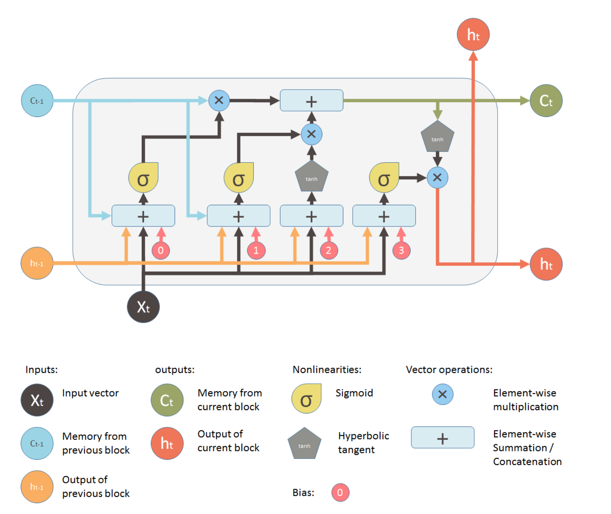Figure 2.6: LSTM Module. Image reproduced from: [18]
Each LSTM module can be considered to be formed by three gates: input (It) , forget (ft) and output gate (ot). The input gate decides if a piece of information is important enough or not to be remembered (Equation 2.1). The forget gate (Equation 2.2) decides if a piece of information stored is still relevant or not (and therefore has to be deleted). The output gate determines if a particular information has to have or not a weight in the current time step (Equation 2.3).
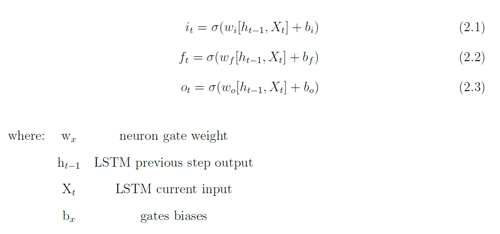
The Sigmoid function (σ, Equation 2.4) is used to squish the output between any value from zero (making the gate block everything) to one (making the gate pass through everything). A neuron gate weight (wx) represents the strength of the connection, while the bias (bx) is used shift the activation function to fit best the data.
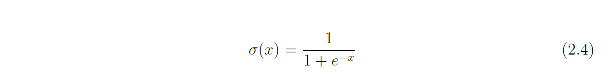
Convolutional Neural Network (CNN)
CNN are a class of neural networks typically used for image recognition/classification, but can be also used for time series analysis. This can be done by converting the time series in a grayscale image like format. The network takes as input a three-dimensional array (Height × Width × Depth) representing an image. A CNN is composed in two main sections: a feature extraction part and a classification part. During the feature extraction part, convolutions and padding layers are applied to extract the main characteristics embedded in the input vector. In the classification part, fully connected layers (converts our three-dimensional input into a one-dimensional array) are then used applying a Softmax function to classify the detected features.
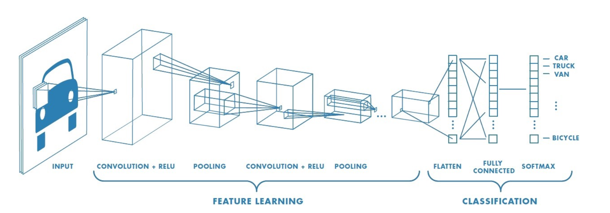Figure 2.7: CNN structure. Image reproduced from: [19]
In mathematical terms, convolution (∗) is an operation between two functions to create a third one, which represents to what extent a function can be modified by another (Equation 2.5).
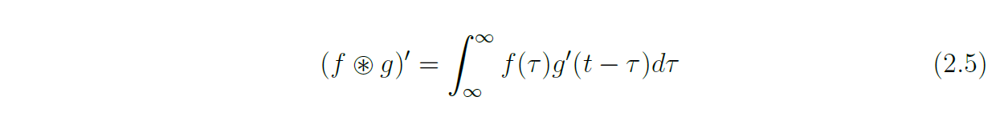
In the convolution stage, a filter matrix (of smaller dimensions than the input image) is applied to the input image in order to produce a feature map. The filter is made move above the image to cover all the pixels (Figure 2.8). Computing a matrix multiplication between the input and the filter, and then adding together the results, the single pixels of the feature map can be produced. A stride value is chosen to determine how much the filter moves during each step.
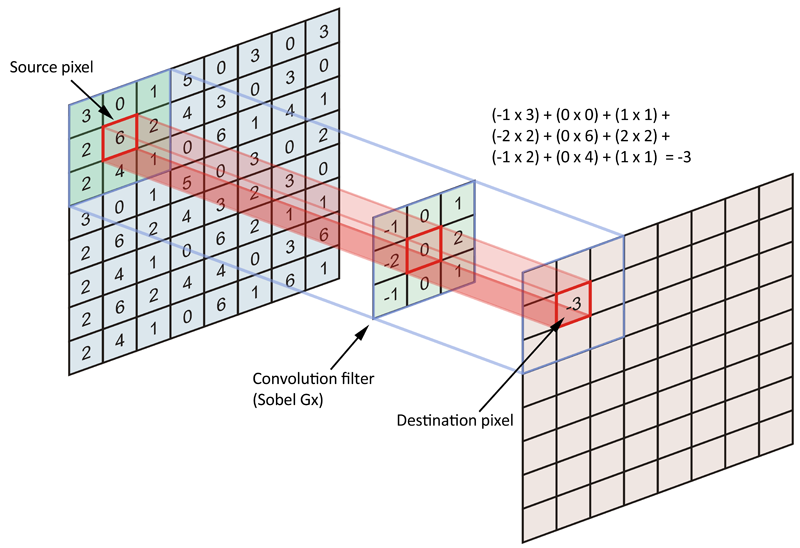Figure 2.8: Image Convolution. Image reproduced from: [19]
Padding is then performed on the resulting feature map (adding pixels of values equal to zero) in order to avoid having a feature map of smaller size than the input image. Finally, after a convolutional layer a max pooling layer is usually applied in order to reduce the size of the input image, so to avoid overfitting (learning just the main features from the input, not also the added noise) and to speed up the model training.
![Max Pooling. Image reproduced from:
[@cnn2]](../images/maxpoll.png) Figure 2.9: Max Pooling. Image reproduced from: [20]
Figure 2.9: Max Pooling. Image reproduced from: [20]
Performance Metrics
There are many types of metrics used nowadays in Artificial Intelligence in order to evaluate a model's overall performance. The three main metrics used in classification problems are:
-
Classification Accuracy
-
Confusion Matrix
-
AUC - ROC Curve
Classification Accuracy is the most used metric. It can be calculated by dividing the number of correct predictions by the total number of predictions made. This metric gives a good understanding of the model performance particularly if the data-set is perfectly balanced (all the classes have the same number of samples).
A Confusion Matrix is a representation of all the predictions made by the model, compared to their real values. In binary classification (for example considering zero as patient being health and one as being ill), the Confusion Matrix is composed of just four cases:
- True Negatives (TN) = both the model and the real output are equal to zero.
- False Positives (FP) = the model predicted one, while the real output was equal to zero.
- False Negatives (FN) = the model predicted zero, while the real output was equal to one.
- Trues Positives (TP) = both the model and the real output are equal to one.
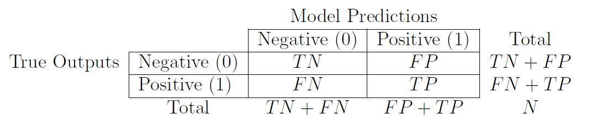Table 2.1: Confusion Matrix
Using the Confusion Matrix, the model Accuracy can be also calculated as:
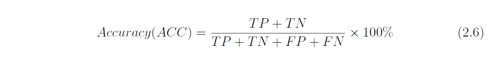
From the Confusion Matrix it is then possible to calculate a model Sensitivity and Specificity. In a medical context, sensitivity quantifies the model's ability to determine patients effected by a certain medical condition. Specificity instead measures the model ability to correctly identify patients not effected by this condition.
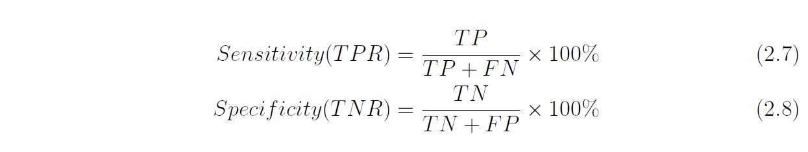
The AUC (Area Under The Curve) - ROC (Receiver Operating Characteristics) curve evaluates a model's ability to correctly discriminate between the different classes using different thresholds.
Plotting the False Positive Rate (Specificity) against the True Positive Rate (1 - Sensitivity), the ROC Curve can be calculated (Figure 2.10).
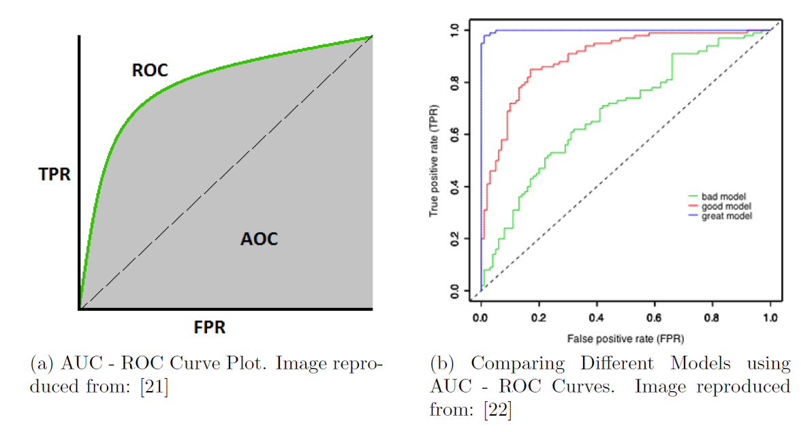Figure 2.10: AUC - ROC Curve Examples
An AUC of 0.5 would represent the model is randomly guessing between the different classes (as shown in Figure 2.10 (a) by the black dotted line) and an AUC of one would instead show the model is making a perfect classification. If the AUC score would be less than 0.5, that would mean the model is doing exactly the opposite of what it has been designed to do.
The ROC curve can be additionally calculated (in a binary classification case) from the data classes probability distributions, calculating the Sensitivity and Specificity (Figure 2.11). Choosing an arbitrary threshold value, the True Negatives will be equal to the Class 1 area on the left side of the threshold. The True Positives will instead be equal to the Class 2 area on the right side of the threshold. The addition of True Negatives and False Positives is represented by the the total area covered by Class 1 while the addition of True Positives and False Negatives is represented be the area covered by Class 2.
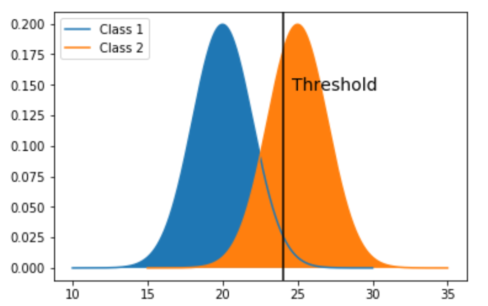Figure 2.11: Classes Probability Distributions
The AUC would yield better results (closer to 1) if the intersection between the two probability distributions is as low as possible. In fact the model False Positives can be represented as the Class 1 area on the right of the threshold and the False Negatives as the Class 2 area on the left of the threshold. If there are no points in common between the distributions (the two output classes are perfectly distinguishable one from the other) then the AUC would be equal to 1 (Figure 2.12 (a)). As shown in Figure 2.12 (b) if the two distributions are instead perfectly overlapping (having all their points in common), the AUC would be equal to 0.5 (the model is randomly guessing between the two classes).
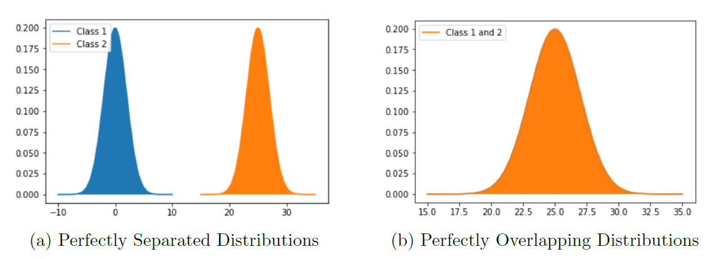Figure 2.12: Probability distributions and AUC relationship
Other types of classification metrics commonly used are: Logarithmic Loss and Classification Report.
Ethics
AI is now used in many fields. Applications in sectors such as medicine and self-driving vehicles, are raising concerns for private individuals as well as public authorities.
This is because, this technology can be used not just as a tool to help humans perform tasks, but also take the place of humans themselves in carrying them out. This can be applied not just for repetitive tasks (such as industry automation), but to more decision making intensive tasks (such as medical prescriptions).
There is now therefore a sense of urgency for Explainable AI. Creating models able to explain their conclusions will reassure the public about their trustworthiness and enable developers to understand if they are affected by bias.
Companies such as Google, have decided to create a list of ethical principles to be followed when creating AI models [23]. AI should:
-
Be socially beneficial.
-
Avoid creating or reinforcing unfair bias.
-
Be built and tested for safety.
-
Be accountable to people.
-
Incorporate privacy design principles.
-
Uphold high standards of scientific excellence.
-
Be made available for uses that accord with these principles.